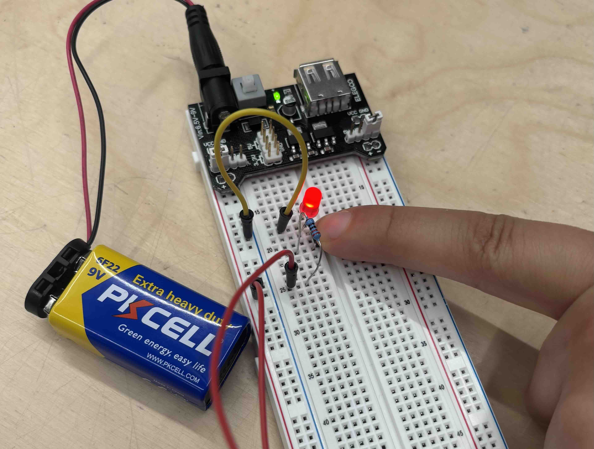

ARDUINO COMPONENTS

We began learning Arduino by first familiarizing ourselves with the components. Labelling them and trying to guess their names before checking the answers proved to be a very effective way to learn and remember each part.
LED BUTTON
Parts used: Power Bridge, Battery, Breadboard, LED, Wire, Resistor and Button
After getting to know the components that will be used to create a circuit. We create a simple LED with a button that switches it on when pressed.
TWO LED WITH BUTTON
Parts used:Power Bridge, Battery, Breadboard, LED, Wire, Resistor and Button
Similar to the previous circuit, the challenge here was figuring out how to connect an additional LED. I eventually solved the problem by creating a parallel connection, allowing both LEDs to form part of a closed circuit. At first, I failed a few times while getting used to the breadboard layout and where to place the components, especially the LEDs. But through trial and error, I began to understand how the connections work and how current flows through a parallel setup.
LED WITH POTENTIOMETER
Parts used: Power Bridge, Battery, Breadboard, LED, Wire, Resistor and Potentiometer
In this circuit, we replaced the button with a potentiometer—a dial that lets us control the amount of electrical resistance. Unlike a button, which simply opens or closes the circuit (turning the LED fully on or off), the potentiometer allows us to gradually adjust the voltage reaching the LED. This change in voltage controls how bright the LED appears, creating a dimming effect. By turning the dial, we control how much current flows through the circuit. Lower resistance allows more current to pass through, making the LED brighter. Higher resistance restricts the flow, causing the LED to dim or even turn off completely. This introduced us to a more nuanced form of interaction with electricity, where we’re not just flipping a switch, but shaping how power moves through the circuit. This exercise was valuable in helping me understand analog input and the concept of variable control in circuits, not just binary states like on/off.
ACTIVITY THREE
Parts used: Arduino, Breadboard, Distan Sensor, Wire, and Speaker
The final activity I did in class involved using a distance sensor to detect nearby objects and convey that information through sound using a speaker. I used the Ultrasonic Distance Sensor (HC-SR04) and a buzzer, and programmed the circuit with the Arduino IDE, using the basic “Ping” example code as a starting point. As an object gets detected by the sensor, the speaker emits sound. This activity helped me understand how sensors can turn physical input (like distance) into real-time feedback. It was also a fun introduction to combining hardware and code to create interactive responses.